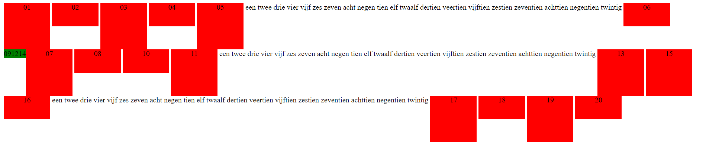
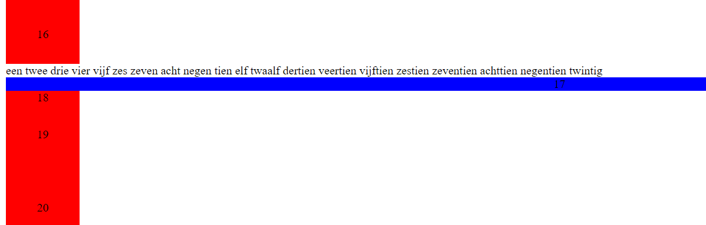

Opdracht 4
Ga na dat de floaty elementen naar links verplaatst werden 'in hun regel.
Ga na dat er geen grote ruimte achterblijft tussen elementen 08 en 10 waar element 09 stond.
Ga na dat 12 en 14 niet altijd netjes naast elkaar staan, het hangt er maar vanaf of ze in dezelfde regel staan.
Ga na dat er geen kleine ruimte is tussen de groene floaty elementen en het rode element rechts ernaast, maar wel tussen de rode elementen onderling.
Ga na dat dit helemaal geen invloed heeft qua positionering, er wordt niks 'gecleared'.
